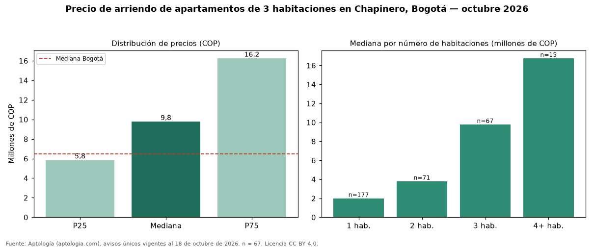

Precio de arriendo de apartamentos de 3 habitaciones en Chapinero, Bogotá — octubre 2026
COP 9.780.000 al mes es el canon mediano de apartamentos de 3 habitaciones en arriendo en Chapinero, Bogotá (n = 67 avisos únicos). Eso la ubica 50 % por encima de la mediana de Bogotá para apartamentos de 3 habitaciones (COP 6.500.000). Por metro cuadrado, la mediana es COP 57.432/m² (+24 % frente a COP 46.296/m² en Bogotá). La dispersión es alta: el cuartil superior (COP 16.250.000) es 2,8 veces el inferior (COP 5.850.000). Cruzando con la oferta de venta del mismo barrio, la rentabilidad bruta implícita es de 9,0 % anual (canon por m² × 12 / precio por m²). El área mediana anunciada es 157 m² (en Bogotá: 132 m²). En el mismo barrio, la mediana de apartamentos es COP 2.000.000 con 1 habitación, COP 3.800.000 con 2 habitaciones, COP 16.750.000 con 4 o más habitaciones. Datos abiertos CC BY 4.0 de Aptología; fuente y búsqueda de inmuebles: https://www.aptologia.com/arriendo/bogota/chapinero. Archivos: PDF de 2 páginas, CSV con las cifras y gráfica PNG.

| Avisos únicos | 67 |
|---|---|
| Percentil 25 | COP 5.850.000 |
| Mediana | COP 9.780.000 |
| Percentil 75 | COP 16.250.000 |
| Mediana por m² | COP 57.432 |
Fuente: avisos vigentes de portales inmobiliarios recopilados por Aptología, deduplicados (mínimo 30 avisos únicos por celda). Precios pedidos, no cerrados. Fecha: 2026-10-18.